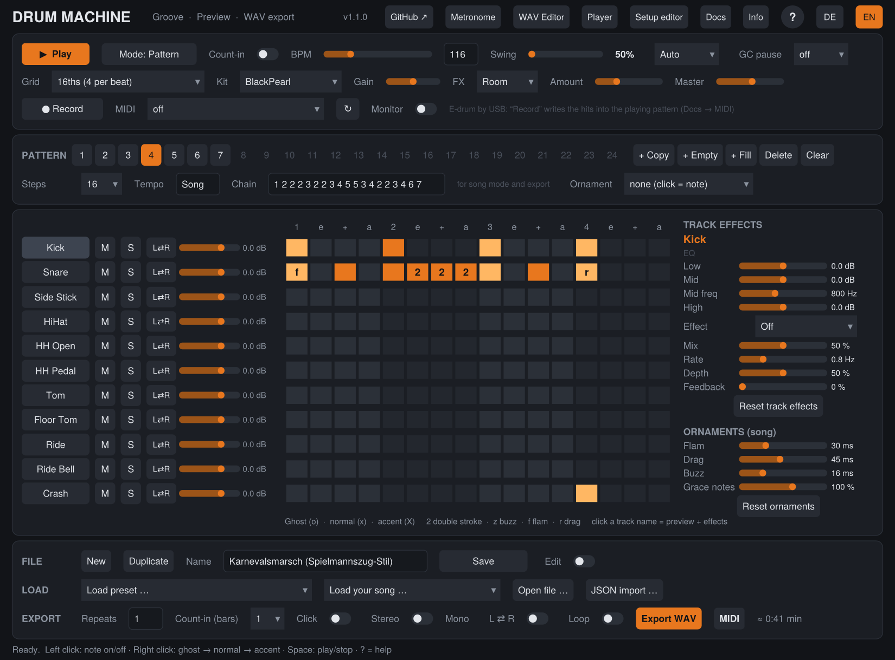

DrumMachine.jl
Step sequencer in Julia for drum practice: enter a groove, listen to it, export it as WAV and play along.

The program shows a short help (?) and these pages (Docs) itself. Installation and start: README (Deutsch).
| Page | Content |
|---|---|
| Features | everything the program can do |
| Song format | the TOML song files, all keys |
| WAV editor | editing exported WAV files |
| Metronome | the metronome window |
| Setup player | playing songs on stage |
| MIDI recording, output and export | recording from an e-drum kit (Roland TD-27), playing through the module, MIDI file export |
| Kits | sample kits, sources and licenses |
| Platforms | Linux, Windows, macOS, required programs |
| Changelog | changes per version |
| API | the exported functions for scripts |
| Support | how to help |